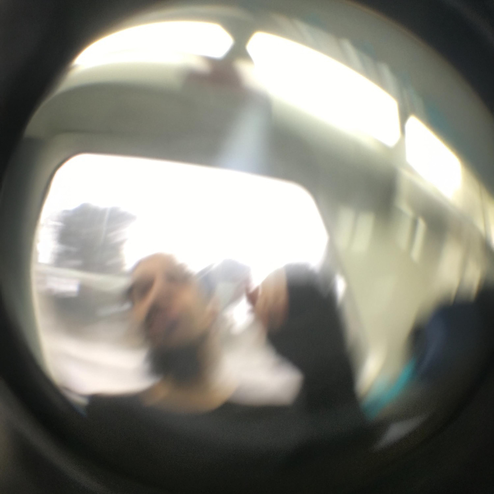

Hi! I'm
Uluç Kaymak
A person who loves learning and creating new things.
I'm a creative Digital Artist. I'm creating conceptual audio/visual
pieces.
I can work with lots of programs with lots of different workflows and workstyles on projects.
On my personal projects, I work on fractured emotions and thoughts through
various forms of digital projection, focusing on interactive audio-visual experience.